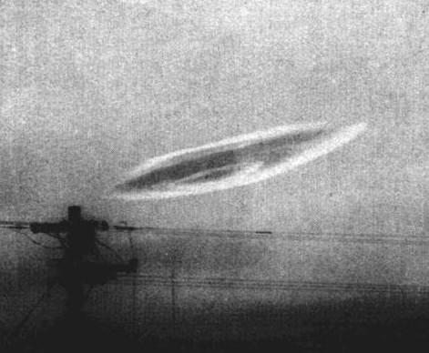

En Nouvelle-Zélande, des phénomènes lumineux sont observés en même
temps qu'un séisme.
Explosion de la 1ère bombe atomique française.
La mer des Caraïbes connait la mêêrte. Un engin extrêmement rapide y évolue sans se soucier de l'amas
considérable de grenades qui est déversé sur lui le lendemain en Méditerranée. L'engin suivait le yacht du
président Nasser.
En Algérie, des phénomènes lumineux sont observés en même temps qu'un
séisme.
Aux îles Salomon, des phénomènes lumineux sont observés en même temps
qu'un s&êisme.
A Rome (New York) observation Cas Blue Book n° 6663 non résolu.
Printemps
Le bijoutier italien Salvatore Cianci roule en près de Syracuse (Sicile)
quand une petite créature en vêtements brillants et portant ce qui ressemblait à un bonnet de plongeur apparaît
dans le faisceau de ses phares. Elle n'a pas de bras mais 2 petites ailes. Cianci fit une crise de nerfs.
Au Japon, des phénomènes lumineux sont observés en même temps qu'un
séê/li>
A Dubuque (Iowa) observation Cas Blue Book n° 6667 non résolu.
Sélection de 20 cosmonautes russes.
Lancement de Pionner 5, 1ʳᵉ sonde interplanétaire.
Selon Robert Spencer Carr, la police de New Paltz (New York),
a réussi à rattraper un humanoïde qui se trouvait hors de son véhicule tandis que ses 2 copilotes se
précipitaient dans la soucoupe et décolaient. L'extraterrestre est remis à la CIA et meurt après 28 jours de
captivité.
Au large de Seattle, on signale un objet métallique articulé. Une semaine plus tard, on localise un
submersible inconnu reposant par 10 m de fond près de Sydney, pendant plusieurs jours.
A Indianapolis (Indiana), observation Cas Blue Book n° 6691 non résolu.
Au large de la Floride, de nombreux navires de guerre américains décèlent la présence d'un submersible à
très grande profondeur qui ne daigne pas bouger malgré leurs efforts répétés pour le déloger. Les militaires
concluent à un sous-marin classique.
Mise à flot du paquebot France.
Lancement du premier vaisseau spatial Vostok.
Une photographie est faite d'une escadre d'ovnis en forme de "V" au-dessus d'Albuquerque (Nouveau-Mexique).
A Pierrefort (Cantal), 2 écoliers observent depuis la route un
phénomène lumineux qui, au bout de quelques mn, disparaît à l'horizon Témoignage le 2008-05-14 < GEPAN : PAN
classé C.
Eté
A Saint-Louis (Missouri) observation Cas Blue Book n° 6858 non résolu.
La presse s'empare largement d'un collision qui a lieu dans le port de New York entre le pétrolier Alkaïd
et un objet inconnu à demi immergé dont on ne retrouva aucune trace.
Au Congrès, Roscoe Henry Hillenkoetter reconnaîîl'USAF
étudie les ovnis et que le secret et le ridicule imposés sur le sujet sont dangereux.
A Wichita (Kansas), observation Cas Blue Book n° 6914 non résolu.
A Crete (Illinois), observation Cas Blue Book n° 6929 non résolu.
A Walkerton (Ontario), 5 policiers observent et poursuivent
pendant 1 h dans 2 voitures 1 petit objet de 1 m de diamètre environ. Les policiers en liaison radio essaient de
suivre une lumière nocturne qui évolue à basse altitude, le long de diverses routes de campagne, puis la lumière
s'immobilise près d'un grand arbre, au milieu d'un champ cultivé, et les voitures des policiers arrivent à une
distance de moins de 100 m de cet arbre. Les témoins observent longtemps avec prudence puis essaient de
s'approcher à pieds : Il planait au-dessus d'un gros arbre, qui s'élevait seul au milieu d'un champ cultivé.
Nous étions à environ 100 m de l'arbre, qui avait à peu près 35 m de haut. L'objet, qui sous-tendait un angle
d'environ 1/4 °, ce qui suppose un diamètre réel inférieur à 0,90 m, paraissait de forme circulaire et était
donc probablement un sphéroïde. Il était intensément lumineux contre le fond sombre du ciel et il passa par
toutes les couleurs du spectre avec une période assez irrégulière d'environ 2 s. Étant donné sa brillance, je
peux avoir légèrement surestimé sa dimension angulaire et il faut peut-être considérer 1/4 ° comme un maximum.
L'estimation minimum serait certainement 1/8 °. L'objet semblait examiner l'arbre d'assez près. Il décrivait des
cercles autour du sommet, se tenant entre 15 et 30 m du sol, passant devant l'arbre, étant ensuite clairement
visible au travers des branches lorsqu'il repassait par derrière. Nous l'avons regardé poursuivre cette
apparente "reconnaissance" de l'arbre pendant plusieurs mn. Il se déplaçait délibérément et intentionnellement
dans son inspection de l'arbre, faisant de courtes pauses devant des points d'intérêt et donnant distinctement
l'impression d'un comportement intelligent. Puis, comme nous voulions absolument le photographier, nous avons
franchi la clôture et nous nous sommes avancés lentement vers l'arbre, du côté qui regardait l'Ouest. Nous
avions à peine fait 3 m lorsqu'il nous a "remarqués" et, avec une puissante et silencieuse accélération, il est
parti quasiment plein sud et a disparu au-dessus de l'horizon, avec une trajectoire légèrement ascendante, et
2,5 s environ, sans aucun bruit. Je crois que l'on peut se fier à mon évaluation des distances et des temps car
à l'époque je faisait beaucoup d'athlétisme et j'étais donc bien entraîné sous ce rapport. Même en tenant compte
des circonstances exceptionnelles, ces chiffres sont probablement exacts à 20 % prèsPoher, Claude: 2003.
Début de la construction d'une extension majeure des installations de Groom Lake pour une meilleure adaptation au programme A-12 (OXCART) de la CIA. Cette période de construction ne
se terminera qu'au milieu de McIninch.
Les travaux commencent à Groom Lake pour le
renforcement et l'allongement de la piste de 5000 pieds à 8500 pieds. Ils se termineront le 15 novembre McIninch.
Ridgecrest (Californie), observation Cas Blue Book n° 6962 non résolu.
A Cressy (Australie), un pasteur et sa femme observent un objet
cylindrique émergant d'un rideau de pluie. Il stoppe brusquement et plane, avant d'être rejoint par 6 petits
disques. Puis, l'ensemble de la formation repart en arrière.
A Mount Kisco (New York), observation Cas Blue Book n° 7057 non résolu.
à Baïkonour Explosion d'une fusée R-16, 123 morts.
Election de John Fitzgerald Kennedy à la Présidence des
Etats-Unis.
A Chula Vista (Californie), observation Cas Blue Book n° 7133 non résolu.
Les frères Judica Cordiglia captent un S. O. S. lancé par un soviétique. Quelques
jours plus tard, les autorités soviétiques annoncent que Spoutnik VI s'est désintégré au cours du vol.
Observation au Sud de Kyushu (Japon)Cas Blue Book n° 7134 non résolu.
Pendant une observation d'ovni, des vers géants blancs rampant sur une route d'Yssandon (France).

Photographie à Taipei
Depuis le parc de Yuanshan Park (Chine), près du grand hotel de Taipei (Chine), Tsai
Chang-hung (de la famille de Tsai Chang-hsien, ancien directeur de l'observatoire de la ville de Taipei)
photographie ce nuage lenticulaire.
Au Canada, un astronome part avec son frère pourchasser une
sphère étrange qui lui a été signalée : Nous sommes arrivés à moins de 100 m de l'objet. Il planait au-dessus
d'un gros arbre, qui avait à peu près 35 m de haut. L'objet [...] paraissait de forme circulaire et était donc
globalement un sphéroïde. Il était intensément lumineux contre le fond sombre du ciel et il passa par toutes les
couleurs du spectre avec une période d'environ 2 s (période assez irrégulière). [...] L'objet semblait examiner
l'arbre d'assez près. Il décrivait des cercles autour du sommet, se tenant entre 15 et 30 m du sol, passant devant
l'arbre, étant ensuite clairement visible au travers des branches lorsqu'il repassait par derrière. Les témoins
se rapprochent mais l'engin disparaît : Il est parti quasiment plein sud et a disparu au-dessus de l'horizon.
L'alerte rouge annonçant le déclenchement d'une attaque contre l'URSS alarme les bombardiers de la base aérienne
de Travis (USA) après la détection par radar de "cibles" volant au-dessus du Pôle Nord en direction des Etats-Unis.
Les "cibles" disparaissent des écrans. On les expliquera par la suite comme des réflections de la Lune. La
catastrophe est évitée de justesse.